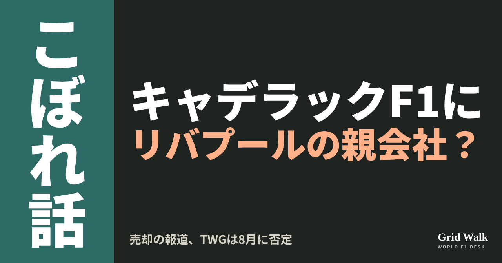
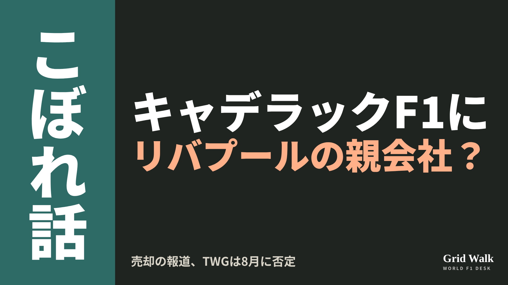
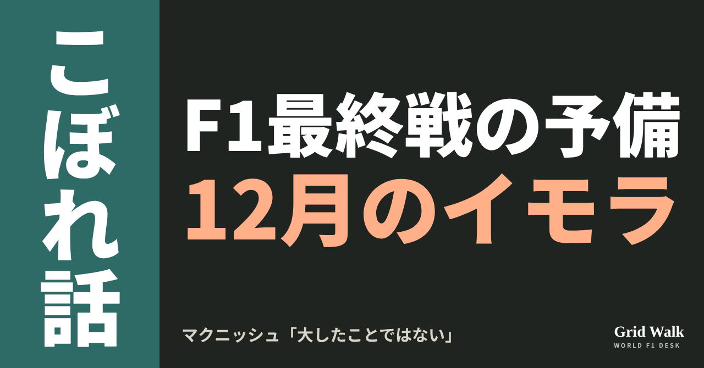
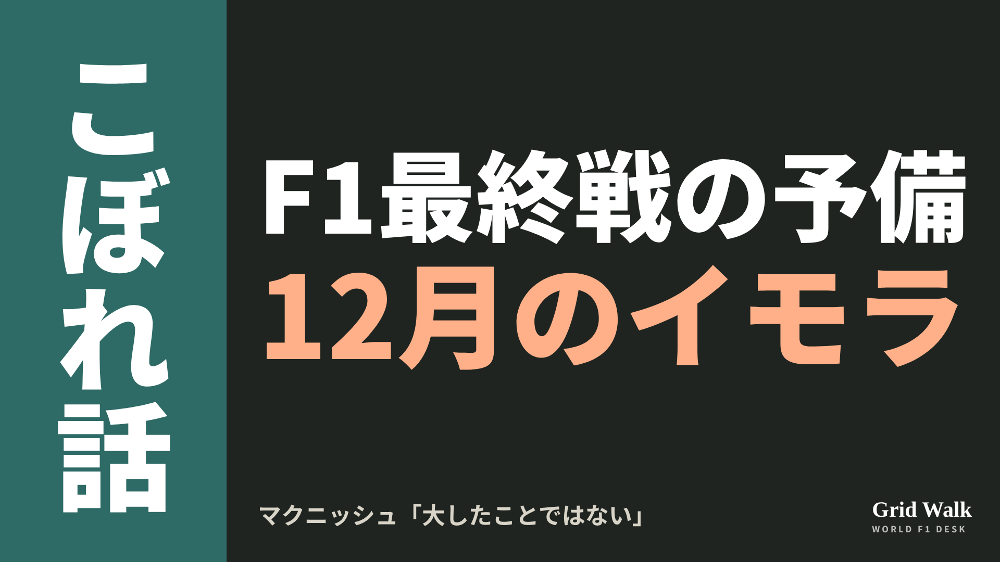
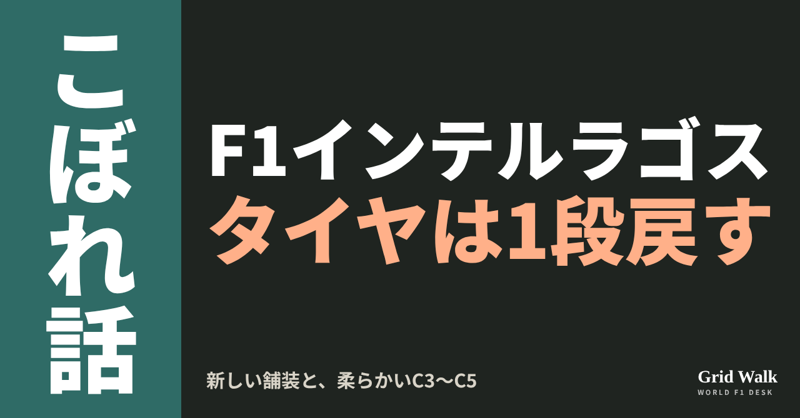
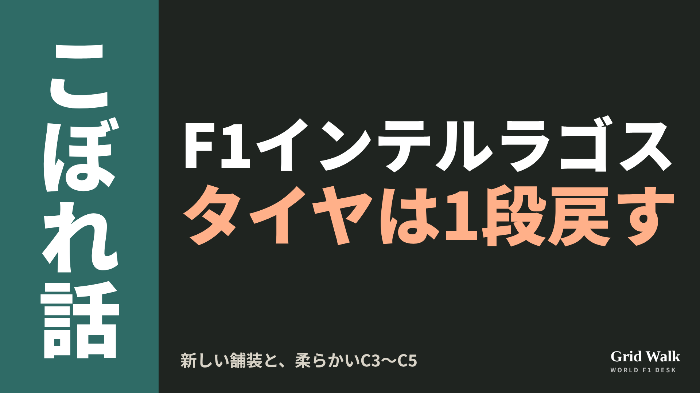
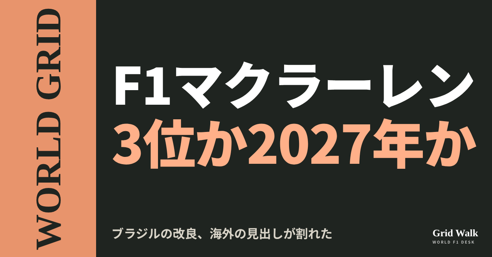
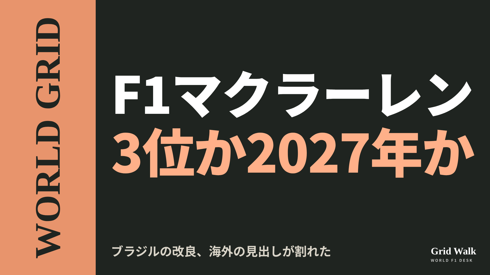

<meta charset="utf-8"><title>11/5夜のコラム note貼り付け</title>
<style>
/* one column of numbered paste steps; text steps vs image steps differ by marker */
:root{--bg:#F5F4F0;--card:#FFFFFF;--ink:#1D2321;--mute:#5F665F;--line:#DCDAD2;--btn:#1F5FBF;--btnok:#2E8B4F;--img:#E9F3EC;--imgink:#22663B;--sans:'IBM Plex Sans JP','Hiragino Sans','Noto Sans JP',sans-serif}
@media (prefers-color-scheme:dark){:root:not([data-theme="light"]){--bg:#171A19;--card:#202423;--ink:#ECEDE8;--mute:#A3AAA2;--line:#343937;--btn:#4D8BE6;--btnok:#3FA866;--img:#1E2C23;--imgink:#8FD3A6;color-scheme:dark}}
:root[data-theme="dark"]{--bg:#171A19;--card:#202423;--ink:#ECEDE8;--mute:#A3AAA2;--line:#343937;--btn:#4D8BE6;--btnok:#3FA866;--img:#1E2C23;--imgink:#8FD3A6;color-scheme:dark}
body{background:var(--bg);color:var(--ink);font-family:var(--sans);font-size:15px;line-height:1.75;padding:20px 16px 60px}
main{max-width:680px;margin:0 auto;display:grid;gap:28px}
header h1{font-size:22px;margin:0 0 6px;text-wrap:balance}
header p{margin:0;color:var(--mute);font-size:14px}
nav{display:flex;gap:8px;flex-wrap:wrap;margin-top:12px}
nav a{border:1px solid var(--line);border-radius:999px;padding:4px 14px;color:var(--ink);text-decoration:none;font-size:14px;background:var(--card)}
.part h2{font-size:18px;line-height:1.5;margin:0 0 12px;text-wrap:balance;display:flex;gap:10px;align-items:baseline;flex-wrap:wrap}
.tag{font-size:13px;background:var(--ink);color:var(--bg);border-radius:6px;padding:1px 9px}
.steps{list-style:none;margin:0;padding:0;display:grid;gap:12px}
.st{background:var(--card);border:1px solid var(--line);border-radius:12px;padding:12px;min-width:0}
.hd{display:flex;align-items:center;gap:8px;margin-bottom:8px}
.no{width:26px;height:26px;border-radius:50%;background:var(--btn);color:#fff;display:inline-flex;align-items:center;justify-content:center;font-size:13px;font-weight:700;flex:0 0 26px}
.im .no{background:var(--btnok)}
.hd em{font-style:normal;font-size:12px;background:var(--img);color:var(--imgink);border-radius:6px;padding:0 8px}
.bx{font-size:13.5px;line-height:1.7;border:1px solid var(--line);border-radius:8px;padding:8px 10px;max-height:110px;overflow:auto;overflow-wrap:anywhere}
.bx.tall{max-height:150px}.bx p{margin:0 0 6px}.bx h2{font-size:14px;margin:8px 0 4px}.bx a{color:var(--btn)}
.st img{display:block;width:100%;max-width:100%;border:1px solid var(--line);border-radius:8px}
.sub{font-size:12.5px;color:var(--mute);margin:6px 0 0}
.cp{width:100%;margin-top:8px;padding:12px;border:0;border-radius:10px;background:var(--btn);color:#fff;font:600 15px var(--sans);cursor:pointer}
.cp.ok{background:var(--btnok)}.cp.dl{background:var(--btnok)}.cp:focus-visible{outline:3px solid var(--ink);outline-offset:2px}
.xh{font-size:15px;margin:20px 0 10px}
.fb{font-size:13px;line-height:1.7;margin:8px 0 0;padding:8px 10px;border-radius:8px;background:var(--img);color:var(--imgink)}
.opts{display:grid;grid-template-columns:repeat(auto-fill,minmax(240px,1fr));gap:10px}
.opt{min-width:0}.opt img{display:block;width:100%;border:1px solid var(--line);border-radius:8px}
.ol{display:flex;align-items:center;gap:8px;margin-top:6px}.ol b{font-size:13px;flex:0 0 auto}.ol .on{font-size:12.5px;color:var(--mute);flex:1;min-width:0}.ol .cp{width:auto;flex:0 0 auto;padding:9px 14px}.ol .cp{margin:0;padding:9px}
.toast{font-size:13px;color:var(--mute);margin-top:6px}
</style>
<main><header><h1>11/5夜のコラム note貼り付け</h1><p>いま公開済みは4本です。青い番号は文章、緑は画像です。</p><nav><a href="#p1">1</a><a href="#p2">2</a><a href="#p3">3</a><a href="#p4">4</a></nav></header><section class="part" id="p1"><h2><span class="tag">OFF GRID</span>キャデラックF1に売却報道　候補にレッドソックスのFSGも</h2><p class="sub">サイトに公開：23:49</p><ol class="steps">
<li class="st im"><div class="hd"><span class="no">1</span><b>見出し画像</b><em>画像</em></div><button class="cp dl" data-img="img/cadillac-fsg-stake-20261105.png" data-name="cadillac-fsg-stake-20261105_見出し画像.png">ダウンロード</button></li>
<li class="st"><div class="hd"><span class="no">2</span><b>タイトル</b></div><div class="bx" id="p1t">キャデラックF1に売却報道　候補にレッドソックスのFSGも</div><button class="cp" data-plain="p1t">タイトルをコピー</button></li>
<li class="st"><div class="hd"><span class="no">3</span><b>本文</b></div><div class="bx tall" id="p1r"><p>リバプールFCとボストン・レッドソックスを持つアメリカのフェンウェイ・スポーツ・グループ（FSG）が、F1のキャデラックの過半数の株に関心を示している――。イギリスのCrash.netが11月4日、米紙ワシントン・ポストなどの報道を引いて、そう伝えました。キャデラックF1の主なオーナー、TWGの側は、8月に「売却は考えていない」と否定していました。あくまで報道の段階です（要約はサイトに https://f1gridwalk.github.io/news/en-crash-fsg-cadillac-stake-interest/ ）。</p><p>評価額を比べた4つの記事と、TWGの8月の声明の記事へのリンクはサイトで → <a href="https://f1gridwalk.github.io/lens/cadillac-fsg-stake-20261105/?utm_source=note&amp;utm_campaign=cadillac-fsg-stake-20261105">https://f1gridwalk.github.io/lens/cadillac-fsg-stake-20261105/?utm_source=note&amp;utm_campaign=cadillac-fsg-stake-20261105</a></p><h2>発端はSportico、FSGは「一社」として浮上</h2><p>発端は、米スポーツビジネスサイトSporticoの報道です。キャデラックF1を支配する実業家マーク・ウォルターが、TWGを通じて持つ支配株の売却を探っている、という内容でした。米RACERは、Sporticoの報道として、関心を示しているのは7者だと伝えています。名前は出ていません。</p><p>Crash.netは、FSGが過半数の株に関心を示す「一社として浮上した」と書き、ほかにも最大6者が関心を示していると伝えました。FSGはアメリカのNASCARのRFKレーシングにも出資しています（FSG公式）。</p><p>FSGの地元、アメリカのボストン・グローブも11月4日、「複数の報道によると」として、FSGが過半数の株を買う交渉をしていると伝えました。FSGの広報はコメントを控えたそうです。グローブはFSGの主なオーナー、ジョン・ヘンリーが持つ新聞で、記事でもそう断っています。ほかにもウォルター側と話しているとみられる相手がいるため、取引がまとまるとは決めてかかれない、とも書いています。</p><h2>値段は22.4億ポンド？　30億ドル？</h2><p>評価額は記事によって違います。Crash.netは「22.4億ポンド」。RACERは「30億ドル」で、Sporticoの数字であり、ウォルター側の評価額だとしています。グローブは「約30億ドル」。英Motorsport Weekは、The Athleticの取材源の話として「30億ドルを超え、約22億ポンド」と書きました。</p><p>数字は違って見えますが、Motorsport Weekが30億ドルを約22億ポンドと言い換えているように、編集部としては、ほぼ同じ額を通貨を替えて書いたものと見ています。ただ、チーム全体の値か、ウォルターの持ち分の値か、売値かは、記事で書き方が分かれます。</p><h2>TWGは8月に「売却は考えていない」</h2><p>外せないのが以前の否定です。英The Raceが8月20日に伝えたところでは、TWGモータースポーツはオランダGPを前に、声明でこう言っていました。</p><blockquote><p>「TWGは、キャデラックのチームも、TWGモータースポーツのほかのどの部分も、売却を考えていない」（TWGモータースポーツの声明、The Race／イギリス）</p></blockquote><p>米Yahoo Sportsによると、ウォルターは8月にNBAのロサンゼルス・レイカーズを売り、9月にはサッカーのチェルシーの株も手放しました。The Raceは、レイカーズの売却が、ほかのスポーツの持ち物の先行きをめぐる臆測を呼んだと伝えています。</p><p>今回の報道では、RACERの11月2日夜の問い合わせに、TWGモータースポーツは答えていません。Motorsport Weekは、TWGもキャデラックも売却が近いとは認めていないと書いています。GMの反応は、確かめた記事には出ていません。</p><p>参戦1年目のキャデラックは、F1公式の結果ではメキシコシティGPまでポイントが0で、最高位は3月の中国GPでバルテリ・ボッタスが入った13位です。2027年の残り1席をめぐる話は、11月5日のコラムで書きました（ https://f1gridwalk.github.io/lens/cadillac-seat-race-20261105/ ）。</p><p><strong>リバプールやレッドソックスと同じ持ち主のF1チーム、あなたは見てみたいですか？</strong></p><p>━━━━━━━━━━</p><p><strong>F1 Grid Walk では、世界のF1ニュースを毎日日本語でまとめています。</strong></p><p>海外の記事の要約を、毎日載せています。</p><p><a href="https://f1gridwalk.github.io/">https://f1gridwalk.github.io/</a></p><p>ほかの海外記事も読みたい方は、F1 Grid Walkへ。</p><p><a href="https://f1gridwalk.github.io/lens/cadillac-fsg-stake-20261105/">https://f1gridwalk.github.io/lens/cadillac-fsg-stake-20261105/</a></p><p>━━━━━━━━━━</p><p><a href="https://www.crash.net/f1/news/1109319/1/liverpool-fc-owners-emerge-potential-buyers-cadillac-f1-team-stake">出典：Crash.net（イギリス）</a></p><p><a href="https://racer.com/2026/11/03/twg-group-exploring-sale-of-cadillac-f1-team">出典：RACER（アメリカ）</a></p><p><a href="https://sports.yahoo.com/mlb/article/dodgers-owner-mark-walter-reportedly-looking-to-sell-f1-team-stake-months-after-selling-lakers-and-chelsea-200154445.html">出典：Yahoo Sports（アメリカ）</a></p><p><a href="https://www.bostonglobe.com/2026/11/04/sports/fenway-sports-group-formula-one/">出典：ボストン・グローブ（アメリカ）</a></p><p><a href="https://www.motorsportweek.com/2026/11/04/cadillac-f1-team-owner-reportedly-considering-sale/">出典：Motorsport Week（イギリス）</a></p><p><a href="https://www.the-race.com/business/cadillac-f1-owner-twg-firm-statement-team-sale-talk/">出典：The Race（イギリス）</a></p><p><a href="https://www.formula1.com/en/results/2026/team/Cadillac-Ferrari">出典：F1公式（イギリス）</a></p><p><a href="https://www.formula1.com/en/results/2026/drivers/VALBOT01/valtteri-bottas">出典：F1公式（イギリス）</a></p><p><a href="https://fenwaysportsgroup.com/the-fsg-family/">出典：フェンウェイ・スポーツ・グループ公式（アメリカ）</a></p></div><button class="cp" data-rich="p1r">本文をコピー</button></li>
<li class="st"><div class="hd"><span class="no">4</span><b>ハッシュタグ</b></div><div class="bx" id="p1h">#F1 #F1jp #キャデラック #リバプール #レッドソックス #FSG #F1ビジネス #サンパウロGP #F1こぼれ話 #OFFGRID</div><button class="cp" data-plain="p1h">タグをコピー</button></li>
</ol><h3 class="xh">X</h3><ol class="steps">
<li class="st im"><div class="hd"><b>X用の画像</b><em>画像</em></div><button class="cp dl" data-img="img/x_cadillac-fsg-stake-20261105.png" data-name="x_cadillac-fsg-stake-20261105.png">ダウンロード</button></li>
<li class="st"><div class="hd"><b>① noteをシェアするときの文</b></div><div class="bx" id="p1x0">キャデラックF1に売却の報道。リバプールFCやレッドソックスを持つFSGが、過半数の株の取得を検討する1社だと英米のメディアが伝えました。TWGは8月に売却を否定しています。noteにまとめました #F1jp #キャデラック</div><button class="cp" data-plain="p1x0">コピー</button></li>
<li class="st"><div class="hd"><b>② ①への返信</b></div><div class="bx" id="p1x1">ほかの海外記事も読みたい方は、F1 Grid Walkへ。
https://f1gridwalk.github.io/lens/cadillac-fsg-stake-20261105/?utm_source=x&amp;utm_campaign=cadillac-fsg-stake-20261105</div><button class="cp" data-plain="p1x1">コピー</button></li>
<li class="st"><div class="hd"><b>③ ②への返信</b></div><div class="bx" id="p1x2">毎日の海外F1ニュースは、日本語でこちらにまとめています。
https://f1gridwalk.github.io/</div><button class="cp" data-plain="p1x2">コピー</button></li>
</ol></section><section class="part" id="p2"><h2><span class="tag">OFF GRID</span>最終戦は中東か、12月のイモラか　アウディ「シミュレーションはとても早くできる」</h2><p class="sub">サイトに公開：23:49</p><ol class="steps">
<li class="st im"><div class="hd"><span class="no">1</span><b>見出し画像</b><em>画像</em></div><button class="cp dl" data-img="img/finale-imola-standby-20261105.png" data-name="finale-imola-standby-20261105_見出し画像.png">ダウンロード</button></li>
<li class="st"><div class="hd"><span class="no">2</span><b>タイトル</b></div><div class="bx" id="p2t">最終戦は中東か、12月のイモラか　アウディ「シミュレーションはとても早くできる」</div><button class="cp" data-plain="p2t">タイトルをコピー</button></li>
<li class="st"><div class="hd"><span class="no">3</span><b>本文</b></div><div class="bx tall" id="p2r"><p>カタールGP（11月29日）とアブダビGP（12月6日）。F1公式のカレンダーで、最後の2戦は予定どおりです。その裏で、12月最初の週末にイモラで走る予備の案も消えていません。アウディのレーシングディレクター、アラン・マクニッシュは、そうなっても「シミュレーションはとても早くできる」と話しました。</p><p>7月からの報道の流れと、元の記事へのリンクはサイトで → <a href="https://f1gridwalk.github.io/lens/finale-imola-standby-20261105/?utm_source=note&amp;utm_campaign=finale-imola-standby-20261105">https://f1gridwalk.github.io/lens/finale-imola-standby-20261105/?utm_source=note&amp;utm_campaign=finale-imola-standby-20261105</a></p><h2>「輸送は、すべてもう向かっている」</h2><p>ドイツのMotorsport-Totalは11月4日、米国とイランの対立がまた激しくなるおそれがあると報じられる中でも、F1は最終2戦を予定どおり開く方針だと伝えました。</p><blockquote><p>「いまのところ、新しい知らせはない」「だから、カタールとアブダビへ行く計画だ」「私たちの輸送は、すべてもう向かっている。期限はない」（マクニッシュ、Motorsport-Total／ドイツ）</p></blockquote><blockquote><p>「結局、私たちが不当な危険にさらされる理由が分からない」「必要な確認がすべて済んでいるなら、そして私はそうだと思っているが、私たちはサーカスをそこへ運ぶ」（同）</p></blockquote><h2>シミュレーターは「2週間前から」</h2><p>中止になったら？　マクニッシュは、シミュレーターの作業はもともとレースの2週間前に始まると説明しました。</p><blockquote><p>「大したことではない。シミュレーションはとても早くできる」「ドライバーは慣れる必要があるだろう。でも、彼らは前にもあそこで走っている」（マクニッシュ、Motorsport-Total／ドイツ）</p></blockquote><p>気になるのは寒さです。英The Raceは7月、12月のイモラは平均の最高気温が7℃で、タイヤの温度を上げるのがとても難しくなると書いていました。</p><h2>7月のポルティマオから、11月の「10日」まで</h2><p>今季の中東のレースは、すでに2つが予定どおりには開かれていません。バーレーンとサウジアラビアは3月、4月には開かないと決まり（マクラーレン公式）、バーレーンGPは10月にマレーシアのセパンで開かれました（F1公式）。サウジアラビアは、今のカレンダーにありません。</p><p>The Raceは7月25日、最終2戦が開けなければ、もとのアブダビの日の12月6日に1戦を開く案が有力だと報じました。それまで最有力と見られていたポルティマオは、2027・2028年のポルトガルGPの前に施設の工事を済ませたい事情から疑問が出て、イモラが浮かびました。</p><p>決める時期の見込みは、9月中旬から10月中旬へずれてきました（オランダのGPblog）。英Autosportによると、F1はいまもカタールとアブダビでシーズンを終えるつもりで、渡航の勧告も保険も5月から変わっていないと強調しています。メキシコの週末には、全チームへのメッセージでも伝えたといいます。イモラの主催者は6週間以上前に準備の許可を受け、予備が要らなくなった場合、準備の費用はF1がすべて持つといいます。</p><p>一方、GPblogは11月2日、イモラでの代わりのレースを認める最後の日は11月10日だとチームが伝えられた、と報じました。その後の中止なら代わりはない、とも。ただし、公式の決定はないとも書いています。</p><p>マクニッシュの「期限はない」が何の期限を指すのかは、記事からは分かりません。10日は、サンパウロGPの決勝の2日後です。中止のときの点や王座の扱いはDEEP GRID（https://f1gridwalk.github.io/deep/cancelled-races-title/ ）に、マクニッシュの話の要約は https://f1gridwalk.github.io/news/de-motorsporttotal-imola-finale-mcnish/ にあります。</p><p><strong>もし最終戦が12月のイモラになったら、寒さはレースをおもしろくすると思いますか？</strong></p><p>━━━━━━━━━━</p><p><strong>F1 Grid Walk では、世界のF1ニュースを毎日日本語でまとめています。</strong></p><p>海外の記事の要約を、毎日載せています。</p><p><a href="https://f1gridwalk.github.io/">https://f1gridwalk.github.io/</a></p><p>ほかの海外記事も読みたい方は、F1 Grid Walkへ。</p><p><a href="https://f1gridwalk.github.io/lens/finale-imola-standby-20261105/">https://f1gridwalk.github.io/lens/finale-imola-standby-20261105/</a></p><p>━━━━━━━━━━</p><p><a href="https://www.motorsport-total.com/formel-1/news/spontanes-saisonfinale-in-imola-zwei-wochen-vorlauf-wuerden-reichen-26110414">出典：Motorsport-Total.com（ドイツ）</a></p><p><a href="https://www.formula1.com/en/racing/2026">出典：Formula 1 公式（イギリス）</a></p><p><a href="https://www.the-race.com/formula-1/new-contender-emerges-as-f1-2026-season-finale-back-up/">出典：The Race（イギリス）</a></p><p><a href="https://www.formula1.com/en/latest/article/formula-1-and-fia-confirm-malaysia-will-join-the-2026-calendar-as-host-venue-for-bahrain-grand-prix.6lL7vjFEM2VVynRHvg1TCf">出典：Formula 1 公式（イギリス）</a></p><p><a href="https://www.mclaren.com/racing/formula-1/2026/formula-1-confirm-bahrain-and-saudi-arabia-will-not-take-place/">出典：McLaren 公式（イギリス）</a></p><p><a href="https://www.gpblog.com/en/news/formula-1-awaits-us-election-results-before-deciding-on-season-finale">出典：GPblog（オランダ）</a></p><p><a href="https://autosport.com/f1/news/what-does-yamahas-shock-motogp-boycott-mean-for-f1-in-qatar-and-abu-dhabi/10870666">出典：Autosport（イギリス）</a></p><p><a href="https://www.gpblog.com/en/news/f1-season-could-end-in-las-vegas-as-10-november-imola-deadline-emerges">出典：GPblog（オランダ）</a></p></div><button class="cp" data-rich="p2r">本文をコピー</button></li>
<li class="st"><div class="hd"><span class="no">4</span><b>ハッシュタグ</b></div><div class="bx" id="p2h">#F1 #F1jp #アウディ #マクニッシュ #イモラ #カタールGP #アブダビGP #サンパウロGP #F1こぼれ話 #OFFGRID</div><button class="cp" data-plain="p2h">タグをコピー</button></li>
</ol><h3 class="xh">X</h3><ol class="steps">
<li class="st im"><div class="hd"><b>X用の画像</b><em>画像</em></div><button class="cp dl" data-img="img/x_finale-imola-standby-20261105.png" data-name="x_finale-imola-standby-20261105.png">ダウンロード</button></li>
<li class="st"><div class="hd"><b>① noteをシェアするときの文</b></div><div class="bx" id="p2x0">F1の最終戦はカタールとアブダビの予定どおりか、12月のイモラか。荷物はもう中東へ向かっています。アウディのマクニッシュは「シミュレーションはとても早くできる」。noteにまとめました #F1jp #イモラ</div><button class="cp" data-plain="p2x0">コピー</button></li>
<li class="st"><div class="hd"><b>② ①への返信</b></div><div class="bx" id="p2x1">ほかの海外記事も読みたい方は、F1 Grid Walkへ。
https://f1gridwalk.github.io/lens/finale-imola-standby-20261105/?utm_source=x&amp;utm_campaign=finale-imola-standby-20261105</div><button class="cp" data-plain="p2x1">コピー</button></li>
<li class="st"><div class="hd"><b>③ ②への返信</b></div><div class="bx" id="p2x2">毎日の海外F1ニュースは、日本語でこちらにまとめています。
https://f1gridwalk.github.io/</div><button class="cp" data-plain="p2x2">コピー</button></li>
</ol></section><section class="part" id="p3"><h2><span class="tag">OFF GRID</span>C2からC3へ戻して、新しい舗装も。インテルラゴスでピレリが変えたこと</h2><p class="sub">サイトに公開：23:49</p><ol class="steps">
<li class="st im"><div class="hd"><span class="no">1</span><b>見出し画像</b><em>画像</em></div><button class="cp dl" data-img="img/interlagos-pirelli-choice-20261105.png" data-name="interlagos-pirelli-choice-20261105_見出し画像.png">ダウンロード</button></li>
<li class="st"><div class="hd"><span class="no">2</span><b>タイトル</b></div><div class="bx" id="p3t">C2からC3へ戻して、新しい舗装も。インテルラゴスでピレリが変えたこと</div><button class="cp" data-plain="p3t">タイトルをコピー</button></li>
<li class="st"><div class="hd"><span class="no">3</span><b>本文</b></div><div class="bx tall" id="p3r"><p>インテルラゴスの路面は、3年続けて手が入っています。2024年はピットレーンまで含めたコース全体、2025年は12コーナーから1コーナーまでと、3コーナーの出口からバックストレートの区間。そして2026年は、3〜5コーナーと8〜9コーナーの区間が敷き直されました。</p><p>元の記事へのリンクと、雨やタイヤを掘り下げたDEEP GRIDの回はサイトで → <a href="https://f1gridwalk.github.io/lens/interlagos-pirelli-choice-20261105/?utm_source=note&amp;utm_campaign=interlagos-pirelli-choice-20261105">https://f1gridwalk.github.io/lens/interlagos-pirelli-choice-20261105/?utm_source=note&amp;utm_campaign=interlagos-pirelli-choice-20261105</a></p><p>そのあいだに、ピレリが持ち込むタイヤは「C3・C4・C5」→「C2・C3・C4」→「C3・C4・C5」。1段固くして、今年また1段柔らかく戻したことになります。11月6〜8日のサンパウロGPを前に、何が変わって、レースがどうなりそうなのかを整理します。</p><h2>去年のハードは「決勝では選択肢にならない」</h2><p>2025年は、C2をハードとして使いました。ところが決勝前日の土曜の夜、当時ピレリのモータースポーツ部門の責任者だったマリオ・イゾラは、英Autosportにこう話しています。</p><blockquote><p>「ハードは、決勝では実際のところ選択肢にならない」（イゾラ、Autosport／イギリス）</p></blockquote><p>同じ記事は、涼しく湿った天気で路面が冷え、ハードがきちんと働くだけのグリップがないと説明していました。ピレリも今年の展望で、去年のC2には「いくらか滑る傾向があった」とふり返り、いちばん効いた作戦は2ストップだったとしています（F1公式サイト）。</p><p>イタリアのMotorboxは、ピレリの今年の選択を伝えた記事で、去年はチームが「タイムの面での性能の低さ」からハードを使わなかったと書き、1段柔らかくしたピレリには「ピットウォールの作戦を分ける」というはっきりした狙いがあると伝えています。</p><h2>新しい舗装と、3回のフリー走行</h2><p>ピレリは、新しく敷いた区間は「グリップの水準と、路面の変化を変えうる」とし、長い距離を走ったときのタイヤのふるまいにも影響しうるといいます。路面の変化を確かめる機会になるのが、3回のフリー走行です（F1公式サイト）。</p><p>去年と大きく違うのはここです。2025年はスプリントの週末で、フリー走行は金曜の1時間、1回だけでした（F1公式サイト）。今年のサンパウロGPは、FIAとF1が発表した2026年のスプリント開催地6か所に入っておらず、金曜に2回、土曜に1回のフリー走行があります。新しい路面を試す時間は、去年より長くなります。</p><h2>レースはどうなりそうか</h2><p>ピレリは、インテルラゴスでタイヤにかかる横向きの力は「おおむね平均的」だとしています（F1公式サイト）。GRANDPRIX247によると、ピレリは、柔らかいタイヤが長いスティントにもつのか、劣化が大きくてピットストップが増えるのかを、チームが確かめることになると見ています。</p><p>同じGRANDPRIX247が伝えたウィリアムズの事前の見立ては、もう少し厳しめです。路面がタイヤを削りやすく、ピレリが決めた最低内圧も比較的高いため、劣化は大きくなると見ているといいます。記事はさらに、リアの過熱と摩耗が決勝の主な制約になり、乾いた決勝なら2ストップが基本線だとしています。</p><p>ただし同じ記事によると、予報は金曜ににわか雨、土曜の午後に長めの雨で、日曜の決勝も涼しく濡れた状態になりうるといいます。雨になれば、乾いた路面の読みはそのまま使えません。雨とセーフティカーの記録は DEEP GRID #25（ https://f1gridwalk.github.io/deep/interlagos-chaos/ ）、敷き直した路面でのタイヤの読み方はメキシコの例を取り上げた DEEP GRID #37（ https://f1gridwalk.github.io/deep/mexico-tyres-resurfaced/ ）にまとめています。</p><p><strong>1段柔らかくなったタイヤと、新しい舗装。乾いた決勝になったら、2ストップに落ち着くと思いますか。それとも、ピットの回数はもっと増えるでしょうか。</strong></p><p>━━━━━━━━━━</p><p><strong>F1 Grid Walk では、世界のF1ニュースを毎日日本語でまとめています。</strong></p><p>海外の記事の要約を、毎日載せています。</p><p><a href="https://f1gridwalk.github.io/">https://f1gridwalk.github.io/</a></p><p>ほかの海外記事も読みたい方は、F1 Grid Walkへ。</p><p><a href="https://f1gridwalk.github.io/lens/interlagos-pirelli-choice-20261105/">https://f1gridwalk.github.io/lens/interlagos-pirelli-choice-20261105/</a></p><p>━━━━━━━━━━</p><p><a href="https://www.formula1.com/en/latest/article/what-tyres-will-the-teams-and-drivers-have-for-the-2026-sao-paulo-grand-prix.bjn9KJgqDprqvVr9z7i5V">出典：Formula1.com（イギリス）</a></p><p><a href="https://www.formula1.com/en/latest/article/need-to-know-the-most-important-facts-stats-and-trivia-ahead-of-the-2026-sao-paulo-grand-prix.3w1LZutz0yrGfP2Iz38vd8">出典：Formula1.com（イギリス）</a></p><p><a href="https://www.autosport.com/f1/news/strategy-corner-one-f1-tyre-compound-is-out-of-play-for-brazil-gp/10775300/">出典：Autosport（イギリス）</a></p><p><a href="https://www.motorbox.com/auto/sport/f1/news/f1-pirelli-gomme-gp-stati-uniti-messico-brasile-2026">出典：Motorbox（イタリア）</a></p><p><a href="https://www.grandprix247.com/formula-1-news/some-technical-insights-ahead-of-the-2026-sao-paulo-grand-prix-at-interlagos">出典：GRANDPRIX247（アメリカ）</a></p><p><a href="https://www.grandprix247.com/formula-1-news/pirelli-goes-softer-for-sao-paulo-grand-prix-as-tyre-degradation-takes-center-stage-at-interlagos">出典：GRANDPRIX247（アメリカ）</a></p><p><a href="https://www.racefans.net/2025/11/06/interlagos-track-resurfaced-again-after-f1-drivers-criticised-very-bad-2024-work/">出典：RaceFans（イギリス）</a></p><p><a href="https://www.formula1.com/en/latest/article/what-tyres-will-the-teams-and-drivers-have-for-the-2024-sao-paulo-grand-prix.6vKgx4XLiN5It5wtiYXqsL">出典：Formula1.com（イギリス）</a></p><p><a href="https://www.formula1.com/en/latest/article/fp1-norris-edges-out-team-mate-and-title-rival-piastri-in-sole-sao-paulo.7hp9GOnaLdryLEkUPIKUM2">出典：Formula1.com（イギリス）</a></p><p><a href="https://www.fia.com/news/fia-and-formula-1-announce-2026-sprint-calendar">出典：FIA（フランス）</a></p></div><button class="cp" data-rich="p3r">本文をコピー</button></li>
<li class="st"><div class="hd"><span class="no">4</span><b>ハッシュタグ</b></div><div class="bx" id="p3h">#F1 #F1jp #サンパウロGP #インテルラゴス #ピレリ #F1タイヤ #ブラジルGP #F1こぼれ話 #OFFGRID</div><button class="cp" data-plain="p3h">タグをコピー</button></li>
</ol><h3 class="xh">X</h3><ol class="steps">
<li class="st im"><div class="hd"><b>X用の画像</b><em>画像</em></div><button class="cp dl" data-img="img/x_interlagos-pirelli-choice-20261105.png" data-name="x_interlagos-pirelli-choice-20261105.png">ダウンロード</button></li>
<li class="st"><div class="hd"><b>① noteをシェアするときの文</b></div><div class="bx" id="p3x0">インテルラゴスは3年続けて舗装に手が入り、ピレリはタイヤを去年より1段柔らかいC3〜C5に戻しました。去年のハードは「決勝では選択肢にならない」と言われていました。noteにまとめました #F1jp #サンパウロGP</div><button class="cp" data-plain="p3x0">コピー</button></li>
<li class="st"><div class="hd"><b>② ①への返信</b></div><div class="bx" id="p3x1">ほかの海外記事も読みたい方は、F1 Grid Walkへ。
https://f1gridwalk.github.io/lens/interlagos-pirelli-choice-20261105/?utm_source=x&amp;utm_campaign=interlagos-pirelli-choice-20261105</div><button class="cp" data-plain="p3x1">コピー</button></li>
<li class="st"><div class="hd"><b>③ ②への返信</b></div><div class="bx" id="p3x2">毎日の海外F1ニュースは、日本語でこちらにまとめています。
https://f1gridwalk.github.io/</div><button class="cp" data-plain="p3x2">コピー</button></li>
</ol></section><section class="part" id="p4"><h2><span class="tag">WORLD GRID</span>レッドブルと17点差のマクラーレン、ブラジルの改良を海外はどう見た</h2><p class="sub">サイトに公開：23:49</p><ol class="steps">
<li class="st im"><div class="hd"><span class="no">1</span><b>見出し画像</b><em>画像</em></div><button class="cp dl" data-img="img/mclaren-interlagos-upgrades-20261105.png" data-name="mclaren-interlagos-upgrades-20261105_見出し画像.png">ダウンロード</button></li>
<li class="st"><div class="hd"><span class="no">2</span><b>タイトル</b></div><div class="bx" id="p4t">レッドブルと17点差のマクラーレン、ブラジルの改良を海外はどう見た</div><button class="cp" data-plain="p4t">タイトルをコピー</button></li>
<li class="st"><div class="hd"><span class="no">3</span><b>本文</b></div><div class="bx tall" id="p4r"><p>マクラーレンが、サンパウロGPにMCL40の新しい部品を持ち込みます。フロントウイング、リアウイング、フロアの一部です。もとの話は一つなのに、海外メディアの見出しは「2027年」を前に出すものと、今季の3位争いを前に出すものに分かれました。イタリア語の記事では、空力の責任者の言葉が、英語の元の発言より少し強くなっていました。</p><p>各国の見出しの違いと、元の記事へのリンクはサイトで → <a href="https://f1gridwalk.github.io/lens/mclaren-interlagos-upgrades-20261105/?utm_source=note&amp;utm_campaign=mclaren-interlagos-upgrades-20261105">https://f1gridwalk.github.io/lens/mclaren-interlagos-upgrades-20261105/?utm_source=note&amp;utm_campaign=mclaren-interlagos-upgrades-20261105</a></p><h2>プロドロモウが話したこと</h2><p>11月3日のマクラーレン公式の展望で、空力の最高技術責任者ピーター・プロドロモウはこう話しました。</p><blockquote><p>「フロントウイング、リアウイング、フロアのいくつかの部品に改良が入ります。いつもの開発サイクルの一部です」「狙いは、遅れを取り戻し、残りのレースで性能を上げ、来年への勢いをつけることです」（ピーター・プロドロモウ、マクラーレン公式／イギリス）</p></blockquote><blockquote><p>「シーズンはまだ終わっていません。これらの改良は、いま車をよくし、選手権の3位争いを助けるためのものです」「改良から学んだことは来年の開発に生かされますが、新しいフロントウイングの考え方も、来年の車の発表時の仕様に持ち込む見込みです」（ピーター・プロドロモウ、マクラーレン公式／イギリス）</p></blockquote><p>F1公式の順位表（メキシコシティGPのあと）では、コンストラクターズ3位のレッドブルが382点、4位のマクラーレンが365点で、差は17点です。英Autosportによると、直近5戦の得点はマクラーレン59点、レッドブル152点でした。</p><p>FP1では、控えのレオナルド・フォルナローリがオスカー・ピアストリに代わって走ります。マクラーレン公式によると今季4回目で、チームに義務づけられたルーキーの走行はこれで最後です。2027年はF1の控えを続けながら、マクラーレンのハイパーカーでWECに出ます（10月19日のマクラーレン公式）。</p><h2>見出しに「2027年」</h2><p>Autosportの見出しは「マクラーレン、2027年を見すえてブラジルGPに改良」。イギリスのCrash.netは「マクラーレンのブラジルGPの改良、2027年の車の開発を初めて見せる」、オランダのGPblogは「苦しい時期のあと、マクラーレンは2027年のウイングを持ってブラジルへ」でした。</p><p>ただ、GPblogのリード文は「マクラーレンは新しい改良で、レッドブル・レーシングに再び追いつきたいと考えている」と、今季の話から始まります。</p><p>オランダのF1Headの見出しは「マクラーレン、ブラジルですでに2027年のフロントウイングの考え方を持ち込む」と、「考え方」が入っています。プロドロモウが来年の車に持ち込むと話したのも「考え方」でした。</p><h2>見出しは今季の争い</h2><p>イタリアのMotorionlineは「マクラーレン、ブラジルに改良　目標は選手権3位」。オランダのRacingNews365は「マクラーレン、レッドブルとの激しい争いをあきらめない」です（Motorionlineの要約はサイトに https://f1gridwalk.github.io/news/it-motorionline-mclaren-interlagos-updates/ ）。</p><p>英語のF1サイトGrandPrix247の見出しは辛口で、「F1王座の防衛が振るわないなか、マクラーレンはブラジルGPの改良で最後の見せ場」（本文は改良と3位争いの話が中心です）。ベルギーのF1journaalは見出しに「2027年への準備だけではない」とかぎかっこで入れましたが、本文のプロドロモウの言葉に、この言い回しはありません（終盤の改良の考え方はDEEP GRID #33 https://f1gridwalk.github.io/deep/late-season-upgrades/ で）。</p><h2>イタリア語では「とても」に</h2><p>英語の元の発言で、プロドロモウはサンパウロを「かなり代表的なコース」と呼び、「前へもう一歩」進めればと話しています。Motorionlineの引用では「とても代表的で、難しいコース」、「競争の頂点へ向けた、もう一歩のはっきりした前進」です。</p><p>フロントウイングの話も、イタリア語では発表時の仕様に「そのまま」持ち込み、「2027年の車を最初からより競争力のあるものにする」と続きますが、英語の元の発言にこの部分はありません。ほかにも「重要な」改良、「大きく」性能を上げる、「激しい」3位争いと、英語にない言葉が加わっています。RacingNews365は「かなり代表的」と、英語に近いオランダ語にしていました。</p><p>編集部としては、プロドロモウの話は「3位」と「2027年」を一度に言っていて、どちらを前に出すかは媒体の選び方だと見ています（3位争いの点の計算はDEEP GRID #39 https://f1gridwalk.github.io/deep/second-place-fight-2026/ で）。</p><p><strong>マクラーレンのブラジルの改良、あなたなら見出しに「3位」と「2027年」のどちらを入れますか？</strong></p><p>━━━━━━━━━━</p><p><strong>F1 Grid Walk では、世界のF1ニュースを毎日日本語でまとめています。</strong></p><p>海外の記事の要約を、毎日載せています。</p><p><a href="https://f1gridwalk.github.io/">https://f1gridwalk.github.io/</a></p><p>ほかの海外記事も読みたい方は、F1 Grid Walkへ。</p><p><a href="https://f1gridwalk.github.io/lens/mclaren-interlagos-upgrades-20261105/">https://f1gridwalk.github.io/lens/mclaren-interlagos-upgrades-20261105/</a></p><p>━━━━━━━━━━</p><p><a href="https://f1grandprix.motorionline.com/mclaren-gp-san-paolo-2026-interlagos-aggiornamenti-prodromou/">出典：Motorionline（F1GrandPrix）（イタリア）</a></p><p><a href="https://www.mclaren.com/racing/formula-1/2026/sao-paulo-grand-prix/preview/">出典：マクラーレン公式（イギリス）</a></p><p><a href="https://www.mclaren.com/racing/endurance/2026/leonardo-fornaroli-joins-mclaren-hypercar-team/">出典：マクラーレン公式（イギリス）</a></p><p><a href="https://www.formula1.com/en/results/2026/team">出典：Formula 1 公式（イギリス）</a></p><p><a href="https://www.autosport.com/f1/news/mclaren-to-bring-upgrades-to-brazil-gp-with-f1-2027-in-mind/10871328/">出典：Autosport（イギリス）</a></p><p><a href="https://www.crash.net/f1/news/1109304/1/mclarens-brazil-gp-upgrade-will-feature-first-look-2027-f1-car-development">出典：Crash.net（イギリス）</a></p><p><a href="https://www.grandprix247.com/f1-teams-news/mclaren-last-hurrah-with-upgrades-for-brazilian-grand-prix-amid-feeble-defence-of-formula-1-titles">出典：GrandPrix247（イギリス）</a></p><p><a href="https://www.gpblog.com/nl/nieuws/mclaren-komt-na-moeizame-periode-met-2027-vleugel-naar-brazilie">出典：GPblog（オランダ）</a></p><p><a href="https://racingnews365.nl/mclaren-geeft-felle-strijd-met-red-bull-niet-op">出典：RacingNews365（オランダ）</a></p><p><a href="https://www.f1head.nl/nieuws/mclaren-brengt-de-voorvleugel-van-2027-naar-de-gp-van-brazilie/">出典：F1Head（オランダ）</a></p><p><a href="https://f1journaal.be/mclaren-introduceert-belangrijke-updates-in-brazilie-niet-alleen-een-voorbereiding-voor-2027/">出典：F1journaal.be（ベルギー）</a></p></div><button class="cp" data-rich="p4r">本文をコピー</button></li>
<li class="st"><div class="hd"><span class="no">4</span><b>ハッシュタグ</b></div><div class="bx" id="p4h">#F1 #F1jp #マクラーレン #サンパウロGP #インテルラゴス #プロドロモウ #フォルナローリ #アップデート #WORLDGRID #F1ニュース</div><button class="cp" data-plain="p4h">タグをコピー</button></li>
</ol><h3 class="xh">X</h3><ol class="steps">
<li class="st im"><div class="hd"><b>X用の画像</b><em>画像</em></div><button class="cp dl" data-img="img/x_mclaren-interlagos-upgrades-20261105.png" data-name="x_mclaren-interlagos-upgrades-20261105.png">ダウンロード</button></li>
<li class="st"><div class="hd"><b>① noteをシェアするときの文</b></div><div class="bx" id="p4x0">レッドブルと17点差のマクラーレンが、ブラジルに改良を3か所。海外の見出しは「3位争い」と「2027年への準備」に分かれました。noteにまとめました #F1jp #マクラーレン</div><button class="cp" data-plain="p4x0">コピー</button></li>
<li class="st"><div class="hd"><b>② ①への返信</b></div><div class="bx" id="p4x1">ほかの海外記事も読みたい方は、F1 Grid Walkへ。
https://f1gridwalk.github.io/lens/mclaren-interlagos-upgrades-20261105/?utm_source=x&amp;utm_campaign=mclaren-interlagos-upgrades-20261105</div><button class="cp" data-plain="p4x1">コピー</button></li>
<li class="st"><div class="hd"><b>③ ②への返信</b></div><div class="bx" id="p4x2">毎日の海外F1ニュースは、日本語でこちらにまとめています。
https://f1gridwalk.github.io/</div><button class="cp" data-plain="p4x2">コピー</button></li>
</ol></section></main><script>
function done(b,msg){const t=b.dataset.t||b.textContent;b.dataset.t=t;b.classList.add('ok');b.textContent=msg||'コピーしました';setTimeout(()=>{b.classList.remove('ok');b.textContent=t},2000)}
function selectEl(el){const r=document.createRange();r.selectNodeContents(el);const s=getSelection();s.removeAllRanges();s.addRange(r)}
async function rich(el,b){
  try{await navigator.clipboard.write([new ClipboardItem({'text/html':new Blob([el.innerHTML],{type:'text/html'}),'text/plain':new Blob([el.innerText],{type:'text/plain'})})]);done(b);return}catch(e){}
  selectEl(el);let ok=false;try{ok=document.execCommand('copy')}catch(e){}
  if(ok){getSelection().removeAllRanges();done(b)}else{done(b,'選択しました。コピーしてください')}}
async function plain(el,b){
  try{await navigator.clipboard.writeText(el.innerText);done(b);return}catch(e){}
  selectEl(el);let ok=false;try{ok=document.execCommand('copy')}catch(e){}
  if(ok){getSelection().removeAllRanges();done(b)}else{done(b,'選択しました。コピーしてください')}}
let dlns=null;(async()=>{try{dlns=await window.claude?.use?.("downloads")}catch(e){dlns=null}})();
async function img(src,b){
  b.dataset.t=b.dataset.t||b.textContent;
  if(!dlns){try{dlns=await window.claude?.use?.("downloads")}catch(e){}}
  if(!dlns){b.textContent='ダウンロードできませんでした';setTimeout(()=>{b.textContent=b.dataset.t},3500);return}
  try{const blob=await fetch(src).then(r=>r.blob());b.textContent='保存の確認を開いています…';
    await dlns.save({filename:b.dataset.name,data:blob});done(b,'ダウンロードしました')}
  catch(e){const c=e&&e.code;b.textContent=c==='declined'?'キャンセルしました':c==='rate_limited'?'少し待ってからもう一度押してください':'ダウンロードできませんでした';setTimeout(()=>{b.textContent=b.dataset.t},3500)}}
document.querySelectorAll('.cp').forEach(b=>b.addEventListener('click',()=>{
  if(b.dataset.rich)rich(document.getElementById(b.dataset.rich),b);
  else if(b.dataset.plain)plain(document.getElementById(b.dataset.plain),b);
  else img(b.dataset.img,b)}));
</script>